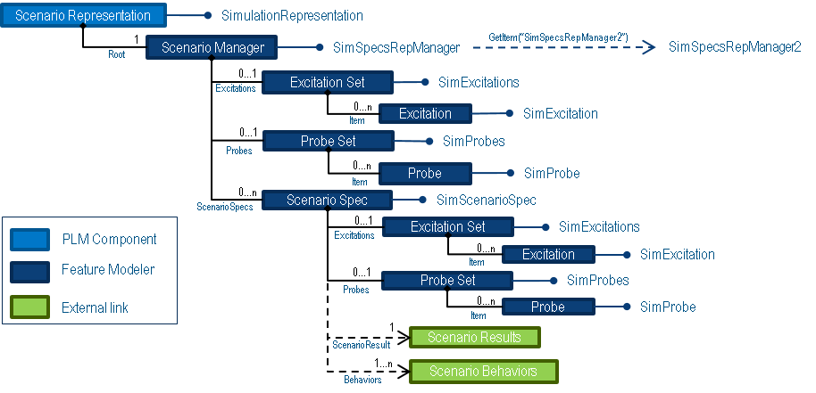
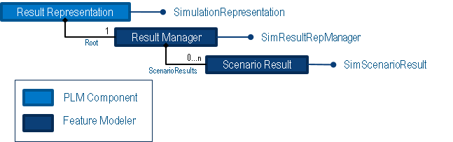

Scenario and Result Representations |
| Technical Article |
AbstractThis article's main goal is to help partners understand the data model of the Scenario and Result Represention PLM objects and identify the APIs necessary to navigate them. In order to better depict the relationships, the data model and navigation behavior is described through the following two sub-sections: For further details on how to retrieve the scenario and result representation from a Simulation please refer to the use case "Navigation on a Simulation".[1] |
The scenario representation contains a scenario manager. It is unique inside the represenation and it contains all the pre-processing features necessary to describe the simulation scenario.
The data model and navigation APIs from the scenario representation are shown below:
|
 |
The results representation contains a result manager. It is unique inside the represenation and it contains all the simulation results and the post-processing features necessary to describe the simulation results.
The data model and navigation APIs from the results representation is shown below:
|
 |